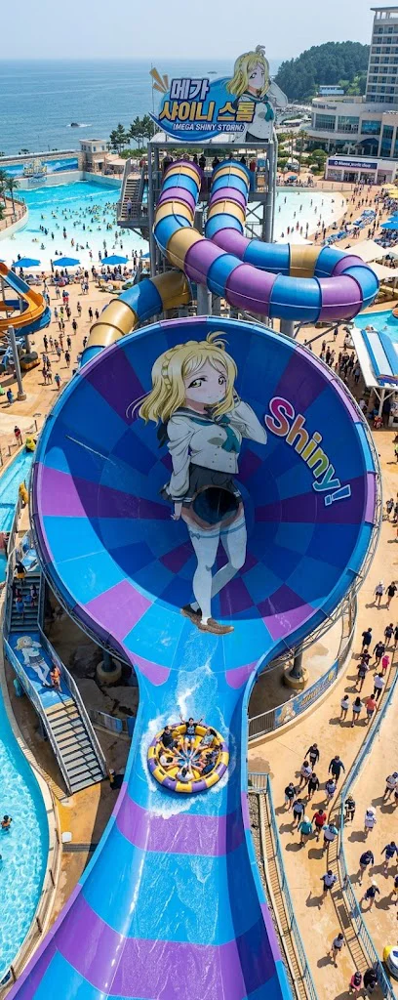

효빈 샤이니 리조트(Hyobin Shiny Resort)는 효빈광역시 탄성군 소원면 부우리에 위치한 효빈시 최대 규모의 매머드급 복합 휴양 리조트 및 워터파크다. 동구대학교 경영학과 재학생이자 당가동 최고의 자경단 어벤져스 멤버인 오하리 가문에서 직접 소유 및 운영하고 있는, 거대한 자본주의의 결정체이자 막대한 캐시카우다.[3]
흔한 전국구 대기업 프랜차이즈 리조트(한화, 쏠비치, 대명 등)가 아님에도 불구하고, 압도적인 오너 일가의 재력과 디테일하고 완벽에 가까운 서비스 품질을 인정받아 당당하게 5성급(★★★★★) 특급 호텔 현판을 달았다. 효빈광역시 전체를 통틀어 5성급 호텔이 단 10개뿐인데, 그중 무려 2개(이곳과 북구 고송동 토모리 해수욕장에 위치한 호텔 하라오)가 오하리네 가문의 단독 소유일 정도로 지역 내 관광, 유통 및 숙박업계의 지배적인 권력과 독과점(?) 카르텔을 굳건히 쥐고 있다.
단순한 호텔 객실뿐만 아니라 "캐리비안 베이 저리 가라" 할 정도로 무시무시한 스케일의 '샤이니 워터월드'를 내부에 품고 있어, 꼭 비싼 돈을 주고 숙박을 하지 않아도 물놀이만 하러 지하철을 타고 당일치기로 오는 방문객들로 여름 내내 인산인해를 이룬다. 가격 역시 5성급 호텔 부속 워터파크 치고는 매우 착한 '전국 딱 평균 수준'을 철저히 유지하고 있는데, 구비된 메가톤급 어트랙션과 하이엔드 시설은 이미 탈지방급을 넘어섰기에 효빈 시민들에게 '입장료와 밥값이 전혀 아깝지 않은 최고의 혜자 리조트'로 칭송받고 있다.
이 거대한 리조트의 정식 개장일은 2001년 6월 13일이다. 이 날짜를 본 수많은 러브라이버(러브라이브 팬덤)들은 경악을 금치 못했는데, 공교롭게도 이 리조트 오너의 딸인 오하리의 도플갱어 캐릭터 '오하라 마리'의 공식 생일(6월 13일)과 월/일이 단 하루도 안 틀리고 완벽하게 일치하기 때문이다.
물론 2001년 개장 당시에는 '러브 라이브! 선샤인!!'이라는 애니메이션 프랜차이즈 자체가 이 세상에 기획조차 되지 않았던 시절이므로, 이는 오하리 가문이 노린 것이 아니라 우주가 점지해 준 소름 돋는 절대적 우연의 일치다. 오하리 본인조차 이 무서운 사실을 대학에 입학하고 진성 덕후 친구들(어벤져스)을 사귀고 나서야 깨닫고 "오 마이 갓! 언빌리버블! 우리 아빠가 시간을 달려서 미래를 내다본 게 아닐까?!"라며 머리를 쥐어뜯으며 경악했다고 한다.[4]
보통 이런 3만 평이 넘어가는 초대형 리조트나 워터파크는 산속 깊은 계곡이나 교통이 꽉 막히는 바닷가 외곽에 있어 자차 없이는 접근성이 극악인 경우가 많지만, 효빈 샤이니 리조트는 도심 접근성이 말도 안 되게 뛰어나 뚜벅이들에게 한줄기 빛이 되고 있다.
이곳은 단순하게 큰 수영장이 하나 딸려 있는 평범한 호텔이 절대 아니다. 한 번 게이트 안으로 들어오면 며칠 동안 밖으로 나갈 필요가 완벽하게 없도록, 먹고 자고 놀고 쉬고 병까지 고치는(?) 모든 생존 인프라를 거대한 성채 안에 전부 때려 박은 자급자족형 복합 엔터테인먼트 시티다. 오하리의 아버지가 전 세계 유명 휴양 리조트(마카오, 베가스 등)를 독하게 벤치마킹하여 무려 19개의 핵심 시설을 치밀하고 완벽하게 구축해 놓았다.
효빈시민들이 용인 캐리비안 베이까지 굳이 비싼 기름값 내며 고속도로 톨게이트를 뚫고 갈 필요성을 전혀 느끼지 못하게 만든 주범이자 리조트의 심장이다. 무려 3만 평이 넘는 엄청난 부지에 지어진 초대형 실내외 통합 워터파크로, 자본주의의 맛을 보여주는 20개의 짜릿하고 살벌한 최첨단 어트랙션을 완벽하게 갖추고 있다.

캐리비안 베이의 메가스톰을 완벽하게 오마주하고 길이를 한층 더 늘려 업그레이드한 초대형 복합 슬라이드. 6인용 원형 튜브를 타고 지상 37m 높이(아파트 12층)에서 출발하여 암흑 터널 속 급하강과 급상승을 세 번 반복하다, 마지막에 지름 20m의 거대한 깔때기 속으로 블랙홀처럼 빨려 들어가며 공포의 무중력을 체험한다. 극강의 스릴 탓에 튜브에서 내릴 때 다리가 풀리는 사람이 속출하며, 성수기 대기 시간 2시간은 기본인 최고의 인기 1순위 시설이다.
폭 120m, 길이 130m에 달하는 거대한 야외 인공 바다. 매시 정각 "뿌우웅-!" 하는 거대한 뱃고동 소리와 함께 수문이 열리며 최대 2.4m 높이의 거대한 쓰나미급 파도가 덮쳐오면, 구명조끼를 입고 대기하던 수백 명의 사람들이 일제히 비명을 지르며 모래사장 쪽으로 속수무책으로 쓸려나가는 장관이 펼쳐진다.
투명한 캡슐 안에 들어가 팔짱을 끼고 덜덜 떨며 서 있으면, 직원의 "3, 2, 1!" 카운트다운 후 갑자기 발판 바닥이 훅 꺼지면서 18m 아래로 수직 자유 낙하하는 극강 공포의 바디 슬라이드. 체감 속도 90km/h로 역루프(360도) 구간을 거꾸로 솟구쳐 오르는 미친 스릴을 자랑하며, 체중이 가벼워 중간에 추진력을 잃으면 터널에 갇혀서 직원이 구하러 가는 참사가 벌어지기도 한다.
4인용 튜브를 타고 어두운 터널을 질주하다, 갑자기 눈앞이 밝아지며 19m 높이의 거대한 U자형 수직 경사면으로 미끄러져 하강 후, 가속도를 받아 반대편 허공으로 솟구쳐 오르는 튜브 어트랙션. 정점에 달했을 때 튜브가 하늘로 튕겨 나갈 것 같은 끔찍한 무중력 공포감을 선사하며 짜릿한 쾌감을 준다.
마치 롤러코스터처럼 강력한 수압(워터젯) 분사를 이용해 2인승 튜브를 오르막길로 거칠게 밀어 올렸다가 급하강시키는 과정을 3번 연속 반복하는 최첨단 슬라이드. 단순히 내려가기만 하는 슬라이드와 달리 엉덩이가 들썩이는 엄청난 속도감과 꿀잼을 보장한다.
강력한 인공 파도가 40km/h의 속도로 쉴 새 없이 뿜어져 나오는 패널 위에서 서핑보드를 타고 엎드리거나 서서 균형을 잡는 익스트림 어트랙션. 멋지게 폼을 잡다가 한순간 삐끗해 넘어지면, 구경꾼들 앞에서 처참하게 물살에 휩쓸려 꼭대기로 처박히는 엄청난 수치심을 꿋꿋하게 견뎌내야 한다.
그저 동동 떠다니기만 하는 지루한 일반 유수풀과 격이 다르다. 튜브를 타고 가다 보면 일정 구간마다 갑자기 쏟아지는 거대한 해골 폭포수와 양옆에서 덮치는 거센 돌발 파도, 좁은 협곡 급류 구간을 연달아 만나게 되는 와일드하고 엑티브한 야외 래프팅 코스다.
구불구불한 원통형 어둠의 튜브 속을 1인용 또는 2인용 튜브를 타고 끝없이 빙글빙글 미끄러져 내려오는 클래식한 재미의 슬라이드. 경사가 심하지 않고 속도 조절이 어느 정도 가능해, 너무 무서운 걸 못 타는 가족 단위 방문객과 연인들에게 인기가 가장 많아 줄이 길다.
튜브 따위의 안전장치 없이 오직 맨몸으로 26m 높이(아파트 8층)의 아찔한 경사(65도)를 직활강으로 미끄러져 내려오는 악마의 슬라이드. 내려오고 나면 등짝 피부가 다 벗겨질 것 같은 마찰의 열기와 수영복 팬티가 엉덩이에 심하게 끼이는(...) 끔찍한 부작용을 감수해야 하지만, 스피드와 짜릿함은 최고다.
수영 좀 한다는 헬스창, UDT 해척조 출신 아재들과 프로 다이버들이 허세를 부리기 위해 모이는 수심 5m짜리 야외 전용 딥 다이빙 풀. 1.5m와 3m 다이빙대가 설치되어 있어, 화려하게 백덤블링 묘기를 부리거나 처참하게 배치기(?)를 시전하여 온몸이 붉어지는 사람들을 구경하며 박수를 치는 재미가 아주 쏠쏠하다.
수심 30cm 미만의 극도로 안전하고 수온이 따뜻한 미취학 아동 전용 풀장. 귀여운 미니 미끄럼틀과 얕은 돌고래 분수가 사방에서 뿜어져 나와, 아이들이 튜브를 타고 안전하게 놀 수 있다. 풀장 주변 선베드엔 놀아주다 지쳐 쓰러져 자는 부모들의 좀비 같은 모습을 볼 수 있다.
거대한 해적선과 정글짐 형태가 결합된 수중 놀이터. 꼭대기에 달린 2.5톤짜리 거대한 대형 물통에 물이 꽉 차면 "땡땡땡!" 경고 종소리와 함께 폭포수처럼 쏟아져 내려, 밑에서 득도하듯 기다리던 사람들의 뼈와 두피까지 시원하게 때려버리는 시각적, 청각적 쾌감을 준다.
수온이 사계절 내내 따뜻하게(31도) 유지되는 실내 거대 돔 건물을 한 바퀴 크게 도는 잔잔하고 긴 유수풀. 밥을 잔뜩 먹고 배부를 때 튜브에 몸을 맡기고 천장을 보며 멍하니 동동 떠다니며 소화시키고 힐링하기에 최적의 수면 장소(?)다.
실내 유수풀에서 비닐 커튼을 뚫고 밖으로 바로 연결되어, 리조트 야외 전경과 소원면 부우리의 우거진 숲속 조경을 감상하며 둥둥 떠다니는 여유로운 코스. 특히 겨울철 눈이 올 때 김이 모락모락 나는 뜨거운 물에 떠다니면 노천탕이 따로 없는 낭만을 선사한다.
강력한 수압의 굵은 물줄기가 벽면과 바닥 20여 곳에서 뿜어져 나와 어깨, 허리, 종아리 등 뭉친 근육을 완벽하게 패버리듯(?) 시원하게 풀어주는 대형 수중 마사지 탕. 으르신들과 운전하느라 지친 아빠들이 한 번 들어가면 하루 종일 점령하고 절대 자리를 비켜주지 않는다.
비가 오나 눈이 오나 사계절 내내 안전하게 이용 가능한 실내 돔 인공 파도풀. 야외 자이언트 웨이브의 2.4m 살인적인 파도보다는 훨씬 약하고 부드러운 1m 남짓의 출렁이는 파도가 쳐서, 수영 초보나 튜브를 탄 어린아이들도 물먹을 걱정 없이 안심하고 즐길 수 있다.
따뜻한 온천수와 부드럽게 정제된 화이트 샌드 백사장이 결합된 이색 프리미엄 스파 존. 찜질복을 입고 45도로 데워진 따뜻한 인공 모래에 온몸을 목까지 파묻고 땀을 쫙 뺄 수 있는 고급 테라피 존으로, 입장료 외에 별도 요금이 부과되지만 예약이 꽉 찬다.
두 개의 좁은 바디 슬라이드 코스가 나란히 꽈배기처럼 꼬여있는 구조. 커플이나 친구 일행이 양쪽에서 동시에 출발 신호에 맞춰 떨어지며, 누가 먼저 도착 풀에 떨어져 물을 먹는지 스피드 내기와 딱밤 내기를 할 수 있는 우정 파괴 슬라이드다.
야외 물놀이 어트랙션을 타다 강풍에 저체온증이 오거나 입술이 파랗게 질렸을 때 살기 위해 뛰어들어가는 구원처. 수영장 동선 곳곳에 편백나무로 짜여진 섭씨 50도의 건식 및 증기 뿜는 습식 체온유지실이 대피소 벙커처럼 여러 군데 마련되어 있다.
수영장 깊은 물 위에 둥둥 떠 있는 극도로 불안정한 스펀지 징검다리를 밟고, 위에 매달린 밧줄 그물을 잡고 건너는 체력 챌린지 코스. 호기롭게 닌자나 출발 드림팀처럼 도전했다가, 3걸음 만에 균형을 잃고 발을 헛디뎌 물에 꼬르륵 처박히는 몸개그가 1분에 한 번씩 속출하여 구경꾼들의 배꼽을 뺀다.
과거 2010년대 중반까지만 해도 이 워터파크 역시 캐리비안 베이나 오션월드 같은 타 대형 리조트들처럼 악명 높고 끔찍한 바가지요금을 자랑했다. 고기는 1mm고 두꺼운 튀김옷만 씹히는 종잇장 돈까스가 18,000원, 맛도 없이 팅팅 불어 터진 레토르트 국물 떡볶이 한 그릇이 만 원을 훌쩍 넘고, 케첩 바른 눅눅한 핫도그 하나가 6천 원을 호가하여 가족 단위 방문객들의 지갑을 털고 등골을 빼먹어 엄청난 분노를 유발했다.
그러나 오하리가 대학 경영학과에 진학하고 호텔 가업 경영에 본격적으로 실무 참견(?)하기 시작하면서 거대한 유통 혁명이 일어났다. 오하리는 워터파크 푸드코트를 암행 순찰하며 친구들과 밥을 먹던 중, 창렬한 소시지와 떡볶이의 맛과 극악무도한 가격표를 동시에 보고 뚜껑이 완벽하게 열려 F&B 총괄 지배인을 즉각 자신의 테이블로 호출했다.
오하리의 폭풍 같은 잔소리와 자본주의적 철퇴가 무자비하게 내려진 이후, 리조트 내 모든 식음료 매장과 구명조끼 렌탈샵의 물가는 리조트 바깥의 일반 시내 식당(안천지구 상권) 가격과 비교해도 고작 500원 내외 차이밖에 나지 않는, 5성급 리조트라고는 믿기 힘든 완벽하게 정상화된 혜자로운 정찰제로 싹 갈아엎어졌다. 맛없는 냉동식품을 퇴출하고 퀄리티는 백화점 푸드코트 급으로 떡상시켰고, 가격은 동네 분식집 수준으로 정직해지니 투숙객들의 만족도는 하늘을 뚫고 대기권을 돌파했다.
이 위대한 '착한 물가' 선언 덕분에 효빈 샤이니 리조트는 워터파크 입장료(성수기 대인 6.5만 원 / 제휴카드 할인 시 3만 원대)는 전국 딱 평균 가격인데 어트랙션 스케일은 최고봉이고, 무엇보다 밥값과 간식값이 미친 혜자인 전설의 워터파크로 전국구 맘카페에 입소문을 타며 매표소 줄이 매일 매진을 기록하는 폭발적인 박리다매 흑자(매출 2배 폭등)를 내고 있다. 오하리의 경영 감각이 빛을 발한 것이다.
퀄리티 대비 가격이 너무 착해서, 리조트 밖에서 밥을 안 먹고 굳이 워터파크 안에 들어와서 식사를 든든하게 해결하는 기현상이 매일 벌어진다.
리조트 정문에서 횡단보도를 하나 건너 방파제 쪽으로 나가면 바로 맞은편에 효빈운전면허시험장이 뜬금없이 바닷가 짠내를 맡으며 덩그러니 위치해 있다.
재미있는 사실은, 이 면허시험장이 효빈광역시 전체 280만 인구수를 감안하면 전국 면허시험장 중 인구 대비 꽤 썰렁하고 한산한 편이라는 것이다. 효빈시 자체가 9개의 지하철/전차 노선망과 버스 인프라가 워낙 기형적일 정도로 촘촘하게 잘 되어 있다 보니, 대중교통 분담률이 69%를 찍어 일반 시민들이 굳이 귀찮게 수십만 원을 들여 1, 2종 운전면허를 딸 필요성을 전혀 느끼지 못하기 때문이다. 공단 취업용 1종 대형이나 특수면허 응시자들 덕에 절대 수치 자체는 전국 중위권으로 꼴찌는 절대 아니지만, 인구수 대비 1, 2종 보통 취득 비율로 따지면 처참하게 적다.
덕분에 한여름 최성수기 주말, 수만 명의 인파가 몰려 비키니와 구명조끼를 입고 야외 파도풀과 메가스톰에서 즐거운 비명을 지르며 왁자지껄한 5성급 리조트 앞마당과, 도로 주행용 노란색 1톤 트럭 한두 대만 조용히 굴러가는 텅 빈 면허시험장의 썰렁한 아스팔트 풍경이 극도의 기묘하고 이질적인 대비를 이루는 진풍경을 감상할 수 있다. 기능 시험을 치다 마의 T자 주차 코스에서 검지선을 밟아 "점수 미달 불합격입니다" 방송을 듣고 우울하게 걸어 나오며, 방파제에 기대어 담배를 입에 물고 워터파크에서 물장구를 치며 즐겁게 뛰어노는 청춘들을 바라보며 현타를 진하게 느낀다는 낭만적이고도 씁쓸한 슬픈 썰이 에브리타임(대학생 커뮤니티)에 여름마다 단골로 올라온다.[9]
오하리의 금수저 재력과 특유의 '샤이니'한 성격 덕분에, 샤이니 리조트는 당가동 어벤져스와 동구대 동기들이 모이는 프라이빗 아지트이자 난장판으로 자주 쓰인다. 이들이 뭉치면 엄숙한 5성급 리조트에서도 시트콤 뺨치는 기행들이 쉴 새 없이 펼쳐진다. 1개 일화당 스케일과 퀄리티가 블록버스터급이다.
여름방학이 본격적으로 시작된 7월 중순, 오하리는 동구대 절친 3인방(오마리, 하마루, 성공린)과 당가동 어벤져스(고해영, 이리자, 송과영, 석다연, 석루비 등) 전원 9명을 밴에 태워 소원면 리조트로 납치하듯 불렀다. 그녀는 친구들이 짐을 풀고 지갑을 꺼내기도 전에 프론트 데스크에 서서 "오 마이 갓! 오늘 우리 애들 숙박, 바비큐 코스, 워터파크 렌탈 전부 내 룸 넘버 이름으로 달아 놔! 그냥 카드 키 3장만 내놔! 샤이니~!!"라며, 리조트 내에서 1박에 수백만 원을 호가하여 가장 비싸다는 VVIP 프라이빗 하라오 풀빌라 독채 3동을 사비(블랙카드)로 통째로 대관해 버리는 압도적인 돈지랄 플렉스를 시전했다.
그날 밤, 풀빌라 개인 온수 인피니티 풀에서 비싼 돔 페리뇽 샴페인을 터뜨리며 그들만의 호화로운 파티를 즐기던 중 사건이 터졌다. 흙수저 출신 텐션 대장 고해영이 "역시 자본주의의 맛이 최고야 캉캉!! 나 하늘을 날 것 같아!!"라며 텐션을 주체 못 하고, 풀장 난간에 올라서서 멋지게 뒤로 덤블링을 하는 백덤블링 다이빙을 시도했다. 하지만 해영은 얕은 온수풀(수심 1.2m)의 수심을 착각하는 치명적인 실수를 저질렀고, 그대로 바닥 타일에 머리와 엉덩이를 쿵 하고 찧어버렸다. 피가 나진 않았지만 혹이 난 해영을 보고, 현직 응급실 간호사인 이리자가 한숨을 쉬며 얼음팩으로 대가리(?)를 찜질하는 대환장 코미디 파티가 벌어졌다.
압도적인 광배근과 UDT 뺨치는 피지컬을 자랑하는 어벤져스의 카난 포지션 송과영. 그녀는 샤이니 리조트의 최고 스릴 어트랙션인 '메가 샤이니 스톰'을 탔으나, 하강 시간이 고작 1분 남짓이라 너무 짧아서 시시하다며 입맛을 다셨다.
거대한 6인승 튜브가 하단 도착 풀 수면에 멈추자마자, 그녀는 안전요원들의 하차 제지를 뚫고 무거운 고무 튜브를 맨몸으로 번쩍 들쳐 업은 채, 자신이 방금 쏟아져 내려온 메가스톰의 거센 물살을 거슬러 37m 깔때기 경사면을 맨발로 뛰어 기어 올라가려는, 인류 역사상 유례없는 '거꾸로 강을 거슬러 오르는 연어 역주행' 미친 짓을 시전했다.
이 경악스러운 피지컬과 광기에 기겁한 라이프가드 5명이 일제히 호루라기를 "삑삑!" 불며 물속으로 달려왔고, 지켜보던 법적 브레인 석다연이 사태의 심각성을 인지하고 급하게 과영의 튜브를 발로 걷어찼다. 다연은 "이 멍청한 근육 뇌야!! 너 지금 업무방해죄 혐의로 경찰에 넘겨져서 어벤져스 해체 당하고 빨간 줄 그이고 싶어?! 당장 안 내려와?! 뿟뿌 데스와!!"라며 과영의 래시가드 멱살을 잡고 물속으로 패대기쳐 간신히 육지로 끌고 나왔다. 사태를 수습하기 위해 오하리가 헐레벌떡 뛰어와 라이프가드 전원에게 90도로 사과하며 프리미엄 뷔페 식사권을 한 장씩 찔러주어 간신히 경찰 고발을 무마한 전설의 민폐 사건이다.
토치만 호텔 및 리에라몰과 상권을 두고 은근한 피 튀기는 경쟁 구도(사실은 카르텔)를 형성하는 오하리 일가. 어느 날, 리에라몰 점장의 장녀이자 구독자 80만의 금수저 유튜버인 임은혜가 17살 차이 나는 여동생 늦둥이 임시연이 탄 명품 유모차를 끌고, 부모님과 함께 샤이니 리조트 메인 로비에 당당하게 예약도 없이 워크인으로 나타났다. 은혜는 카메라를 들고 "아니, 우리 1층 5yncri5e! 존보다 여기 워터파크랑 뷔페가 얼마나 더 잘 되어 있길래 사람들이 다 일로 빠지는 거야? 내가 확실하게 팩트 체크 좀 해볼게 큥!"이라며 대놓고 적진(?)을 염탐하러 온 것이다.
마침 로비를 지나던 오하리는 라이벌 금수저의 등장에 눈빛을 번뜩이며 전투 모드로 돌입, "오 마이 갓! 웰컴 투 샤이니 팰리스! 팝콘이나 챙겨 드셔!"라며 본인이 직접 지배인 모드로 응대에 나섰다. 은혜는 푸드코트의 착한 혜자 가격표와 거대한 메가스톰의 스케일에 속으로 '우리 리에라몰보다 쩌는데...'라며 경악하면서도, 겉으로는 "음~ 우리 리에라 호텔 17층 하스동 메구미룸이 인테리어는 훨씬 더 세련됐네~ 여긴 너무 노랗다 큥~"이라며 지지 않고 콧방귀를 뀌며 허세를 부렸다.
그러나 유모차에 앉아 있던 아기 천사 임시연이 칭얼대자, 오하리가 잽싸게 카페에서 하겐다즈 바닐라 와플 아이스크림을 가져와 아기 입에 물려주었다. 아이스크림을 먹고 방긋 해맑게 웃으며 오하리의 품에 덥석 안기는 동생을 본 은혜는, "아니, 시연아!! 너 왜 적군한테 아이스크림 하나에 매수당해서 안겨있어!! 배신자야 큥!!"이라며 배신감에 오열했고, 팽팽했던 두 금수저 가문의 묘한 자존심 싸움은 아이스크림 하나에 넘어간 아기 덕분에 허무하고 싱겁게 웃음바다로 끝이 났다.
세상 모든 빵과 먹을 것을 자신의 목숨보다 제일 사랑하는 동구대 동기 하마루. 그녀는 워터파크에 입장하자마자 파도풀을 딱 한 번 타고 5분 만에 칼로리를 소모했다며 엄살을 부리더니, 곧장 목적지인 4층 푸드코트로 전력 질주했다. 오하리가 "얼마든지 먹어도 돼!"라며 쥐여준 무적의 마스터 결제 밴드(VIP 프리패스)를 팔목에 든든하게 차고 있던 그녀는, 이성을 잃고 메뉴판을 쓸어 담기 시작했다.
그녀는 푸드코트의 시그니처 메뉴인 얼굴만 한 '샤이니 수제 왕돈까스', 홍합이 산더미인 '해물 짬뽕' 각 1인분씩을 기본으로 깔고, 간식 코너로 돌진해 '즉석 시나몬 츄러스 10개, 아이스크림 와플 5개, 소시지 꼬치 5개'를 혼자서 쟁반 3개에 위태롭게 꽉 꽉 채워 들고 자리로 돌아왔다.
"물놀이 5분이나 했더니 배가 너무 고프고 당이 떨어져 죽겠구먼유~ 즈라~"라며 그 엄청난 1만 칼로리 분량의 음식을 단 30분 만에 진공청소기처럼 뼈도 안 남기고 흡입하는 하마루의 미친 먹방을 본 주변 테이블의 다른 손님들은 입을 떡 벌리고 경악을 금치 못했고, 주방 이모님은 수건으로 땀을 닦으며 "아이고 아가씨, 그렇게 무식하게 먹고 바로 또 찬물에 들어가면 배탈 나서 죽어! 쉬었다가 가!"라며 뜯어말릴 정도였다. 결국 하마루는 배가 남산만 하게 빵빵해져서 L사이즈 구명조끼 지퍼가 잠기지 않는 참사가 발생했고, 워터 슬라이드는 타지도 못하고 오후 내내 잔잔한 실내 유수풀에서 튜브에 낀 채 둥둥 떠다니며 트림을 하고 소화를 시켜야 했다.
중2병 말기 환자 진선자가 밤 10시경 야간 온천 스파 존의 한적하고 조용한 히노끼 노천탕에 몸을 담그다 벌인 흑역사 기행. 밤하늘에 둥근 보름달이 뜨고 물안개가 피어오르자, 갑자기 내면의 흑염룡이 미친 듯이 날뛰기 시작한 그녀는, 주변 시선은 아랑곳하지 않고 탕 속에서 검은색 래시가드 후드를 푹 눌러쓰고 온천수 위로 양팔을 십자가 모양으로 벌리며 우뚝 일어섰다.
"크큭... 지하 800m의 심연에서 끌어올린 마그마의 뜨거운 눈물이여... 나, 타락천사 요한네의 몸에 영원한 타천의 낙인을 새겨라!! 지옥의 문이여 열려라!!"라며 중2병 애니메이션 대사를 허세 가득한 쩌렁쩌렁한 목소리로 외쳤다.
마침 옆 바데풀 탕에서 조용히 눈을 감고 반신욕을 즐기며 피로를 풀던 동네 할아버지들이 깜짝 놀라 눈을 뜨며 "아이고... 저 앳된 처자는 나이도 젊은데 머리 어디가 많이 아파서 저러고 발광을 하누... 부모가 속이 타겠네 쯧쯧..."이라며 진심 어린 혀를 찼다.
이 부끄러운 광경을 수건을 두르고 뒤에서 목격한 이리자의 참을성이 바닥났다. 이리자는 손에 들고 있던 젖은 수건을 단단하게 말아 쥐고 채찍처럼 휘둘러, 서 있는 진선자의 등짝 스매시를 "짝!!" 소리가 나게 찰지게 후려갈겼다. "아프면 병원을 가! 남들 조용히 쉬는 온천에서 혼자 지랄병 떨지 말고 얌전히 탕에 처박혀 즐겨라 이 중2병 환자야!!" 무자비한 수건 물리치료를 당한 진선자는 화끈거리는 등을 비틀며 탕 속으로 꼬르륵 잠수하며 물거품과 함께 "기, 기랑...!"이라는 슬픈 단말마를 남겼고, 노천탕엔 다시 어르신들의 평화가 찾아왔다.
동구대 경영학과 1학년 1학기 회계원리 기말고사 날 아침 8시 30분. 소원면 리조트 본가 펜트하우스에서 자고 있던 오하리가 알람을 못 듣고 늦잠을 자서, 시험 시작까지 고작 30분밖에 안 남은 절체절명의 위기가 찾아왔다. 엎친 데 덮친 격으로 월요일 아침 출근 시간대라 소원IC와 효빈 시내로 진입하는 고속도로가 꽉 막혀 주차장이 되어버렸고, 아무리 밟는 리무진 밴으로도 절대 시간 안에 동구대에 갈 수 없는 끔찍한 상황이었다.
오하리는 눈물 콧물을 흘리며 잠옷(샤이니 파자마) 바람으로 아빠 임원 집무실에 전화를 걸어 "오 마이 갓! 대디! 긴급 초비상 상황이야! 고속도로 꽉 막혔어! 당장 리조트 옥상 헬리패드에 헬기 띄워줘! 나 이번에 전공 필수 F 맞으면 대학 자퇴하고 아빠 호텔 경영 승계도 포기하고 집 나갈 거야 캉캉!!"이라며 20살 성인이라고는 믿기지 않는 미친 생떼를 썼다.
딸이 F를 맞는 꼴은 볼 수 없었던 극성 딸바보인 아빠는, "알았다! 옥상으로 뛰어 올라가라!"라며 진짜로 리조트 옥상 VVIP 헬기장에 대기 중이던 자가용 헬기 조종사를 깨워 로터를 돌려 띄웠다. 오하리는 파자마에 코트만 걸치고 헬기에 올라타 효빈시 상공을 가로질렀고, 동구대 대운동장 천연 잔디밭 한가운데에 엄청난 흙먼지와 모래바람을 일으키며 블록버스터 영화처럼 불법(?) 랜딩을 강행했다.
당시 운동장을 지나던 학생들과 교수들은 하늘에서 갑자기 헬기가 내려오자 기겁하며 대피했다. 시험 시작 3분 전, 헬기에서 뛰어내린 그녀는 헬기 프로펠러 바람에 머리가 산발이 된 채 경영관으로 미친 듯이 전력 질주하여 "휴우~ 샤이니 세이프!!"를 외치며 헐떡거리며 강의실 문을 박차고 들어왔다. 그 결과 무사히 시험을 쳐서 A+를 따냈다는 이 어처구니없고 압도적인 금수저 썰은, 동구대 에타(에브리타임) 전설의 레전드 게시물로 수천 개의 추천을 받으며 박제되어 있다.
박효빈 시장이 주말 아침, 하라오 호텔이나 리에라몰 대신 샤이니 리조트의 '프리미엄 피트니스 클럽'에 일일 회원권을 끊고 방문하여 하체 운동을 조지던 날이었다. 헬스광이자 압도적인 하체 근력을 자랑하는 박 시장이 바벨에 원판을 꽂고 140kg 중량 스쿼트를 준비하며 허리 벨트를 조이고 있었다.
이때 마침 리조트에 놀러 와 아침 운동을 하러 헬스장에 들른 피지컬 몬스터 송과영이 박 시장 옆의 랙을 잡았다. 시장의 중량을 슬쩍 본 승부욕이 발동한 과영은 아무렇지도 않게 자신의 바벨에 120kg 원판을 꽂아 넣고 맨몸으로 앉았다 일어서기 시작했다. 여성의 몸으로 120kg을 가볍게 치는 과영의 미친 피지컬을 본 박 시장은, 효빈시장으로서의 자존심과 수컷(?)의 본능이 자극되어 "어디 시민에게 질 수 없지!"라며 160kg으로 중량을 올렸다.
결국 시장과 20대 여대생의 땀 튀기는 자존심 건 중량 스쿼트 횟수 대결이 벌어졌다. "하나! 으윽... 둘!" 두 사람의 괴성에 피트니스 안의 다른 회원들은 운동을 멈추고 팝콘을 먹으며 넋을 잃고 구경했다. 결과는 무릎 관절의 젊음을 이기지 못한 박 시장의 근소한 패배. 박 시장은 다리가 풀려 바닥에 주저앉은 채 "크윽... 효빈시 청년들의 하체가 아주 튼실하군... 미래가 밝아..."라며 헛웃음을 지었고, 과영은 여유롭게 프로틴 바를 씹으며 퇴장했다.
어벤져스 멤버들이 오하리의 초대로 '아쿠아틱 스파 & 웰니스 테라피 센터'에서 피로를 풀고 있을 때였다. 옆 칸의 VVIP 마사지 룸에서, 한 돈 많은 사모님 진상 고객이 태국인 테라피스트에게 "압이 약하다! 제대로 누르는 거 맞냐, 환불해라!"라며 삿대질을 하고 모욕적인 갑질을 쏟아내는 소리가 벽 너머로 들려왔다. 언어가 완벽하지 않아 쩔쩔매는 테라피스트를 보자, 응급실 수간호사 출신으로 병원 진상들을 수도 없이 상대해 본 이리자의 정의감과 빡침 스위치가 동시에 켜졌다.
이리자는 마사지용 샤워 가운만 걸친 채 문을 쾅 열고 진상 룸으로 난입했다. "아줌마, 압이 그렇게 약하셔서 불만이세요? 제가 특별히 VVIP 프리미엄 근막 이완 딥티슈(Deep Tissue) 물리치료 마사지로 모셔드릴게요."라며 테라피스트를 뒤로 물렸다.
그리고는 응급실에서 환자 제압용(?)으로 다져진 무자비한 악력과 엄지손가락으로 진상 고객의 승모근과 날개뼈 사이의 림프절 급소를 자비 없이 찍어 눌렀다. "아아아아악!! 뼈 부서져!! 살려줘!!" 진상 고객은 침대에 엎드려 비명을 지르며 탭을 쳤다. 이리자는 서늘하게 미소 지으며 "어머, 아직 시작도 안 했는데 엄살이 심하시네요. 압이 약하다면서요? 조용히 받고 팁 두둑이 놓고 가세요."라며 팩폭과 물리치료를 동시에 시전했다. 진상은 눈물을 찔끔 흘리며 얌전히 마사지를 받고 줄행랑을 쳤고, 이리자는 스파 매니저로부터 평생 무료 이용권을 하사받았다.
본관 옥상의 스카이 인피니티 풀에서 열린 한여름 DJ 풀파티 날. 수영장 한가운데에는 인스타 감성용으로 딱 하나 띄워진 '초대형 핑크 플라밍고(홍학) 튜브'가 있었다. 이 튜브를 타고 인생샷을 남기기 위해, 텐션 대장 고해영과 틱톡스타 임은혜가 동시에 눈독을 들였다.
두 사람은 튜브를 향해 동시에 다이빙하여 치열한 수중전을 벌였다. 해영이 "비켜 캉캉!! 이건 내 인스타 메인 감이야!!"라며 홍학의 모가지를 움켜쥐자, 은혜는 "웃기지 마 큥!! 내 구독자 80만이 이 각선미 샷을 기다리고 있다고!!"라며 홍학의 꼬리를 잡고 물장구를 쳤다. 두 사람의 발차기로 인해 인피니티 풀의 평화로운 수면은 아마존 급류처럼 요동쳤고, 구경하던 투숙객들은 칵테일 잔을 들고 이 캣파이트에 환호성을 지르며 베팅(?)을 하기 시작했다.
결국 두 사람의 엄청난 몸부림을 견디지 못한 홍학 튜브가 '펑!' 소리와 함께 수압을 이기지 못하고 터져버렸다. 두 사람은 물을 잔뜩 먹고 꼬르륵 가라앉았고, 안전요원에게 구조되어 나란히 튜브 변상 청구서를 받아 들고 시무룩해졌다는 전설의 대환장 개그 일화다.
야외 카바나 존(유료 렌탈 빌리지)에서, 술에 잔뜩 취한 타 지역 대학생 무리가 카바나 텐트를 흔들고 테이블을 부수며 난동을 부리고 있었다. 직원이 제지했으나 "우리가 돈 냈는데 무슨 상관이냐"며 오히려 적반하장으로 소리를 지르며 위협을 가했다. 이 난장판 때문에 주변 카바나에서 쉬고 있던 가족 단위 투숙객들이 공포에 떨고 있었다.
이때 어벤져스 전용 카바나에서 수박을 썰어 먹으며 쉬고 있던 로스쿨생 석다연이 참다못해 나섰다. 다연은 카바나 계약서 약관이 적힌 팸플릿을 손에 쥐고 그들 앞으로 다가갔다. 그녀는 날카로운 눈빛으로 점을 씰룩이며 "경범죄처벌법 제3조 1항 20호 음주소란 및 형법 제366조 재물손괴죄에 정확히 해당하시네요. 여기 카바나 이용 약관 제5조 3항에 따르면, 고객의 과실로 인한 기물 파손 시 신품 교체 비용의 3배를 배상해야 한다고 명시되어 있습니다."라며 숨도 안 쉬고 팩폭을 날렸다.
취객들이 "네가 뭔데 나서!"라며 반발하려 하자, 다연은 파손된 테이블을 가리키며 "저 이탈리아산 최고급 라탄 테이블, 구매 원가가 150만 원입니다. 3배면 450만 원이네요. 지금 즉시 현장에서 법인 카드로 긁으실래요, 아니면 제가 민사소송장과 가압류 신청서를 예쁘게 써서 학교 과사무실로 보내드릴까요? 뿟뿌 데스와!!"라며 압도적인 지성의 폭력을 행사했다. 450만 원이라는 숫자에 술이 확 깬 대학생들은 얼굴이 사색이 되어 카드를 꺼냈고, 다연은 직원에게 결제기를 넘겨주며 유유히 수박을 먹으러 돌아갔다.